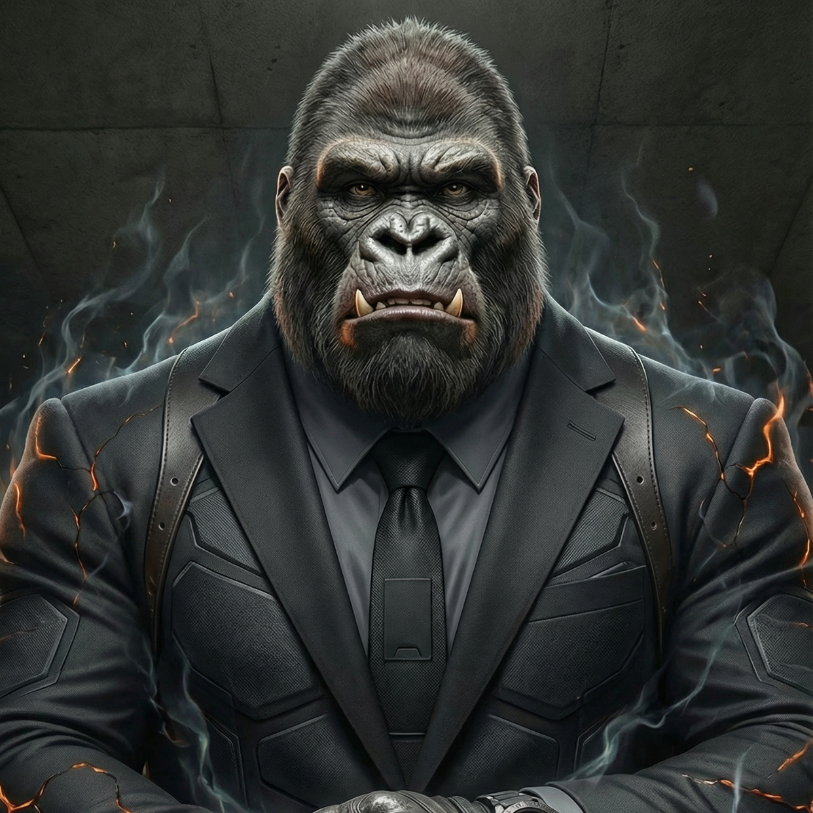

Gunta
Summary
Captain Ash's hulking ape-like lieutenant who relies on devastating physical strength and openly mocks his superior's obsession with Holy Items
Description
Gunta towers over most members of The Order, a mountain of corded muscle and primal power wrapped in coarse, dark fur. His species—one of the rarer simian bloodlines that emerged from the dimensional rifts during The Merging—grants him a physique that makes even seasoned warriors think twice before engaging. Standing nearly eight feet tall with shoulders broad enough to fill doorways, arms thick as tree trunks, and fists the size of boulders, Gunta embodies raw physical dominance.
Background
His face bears the heavy brow and pronounced features of his ape-like heritage, though his eyes—dark and surprisingly expressive—hold a simple, straightforward intelligence that many mistake for stupidity. What Gunta lacks in tactical brilliance and strategic thinking, he more than compensates for with devastating effectiveness in combat. He's been assigned as Captain Ash's lieutenant not despite his limited intellect, but because of his unwavering reliability in battle and his unique ability to follow orders without the complications of personal ambition. Where Ash schemes and plots, Gunta simply acts. Where Ash hungers for a Holy Item to complete himself, Gunta finds the entire obsession baffling and endlessly amusing. His favourite pastime, much to Ash's barely contained fury, is needling his captain about the Holy Item fixation.
Personality
'Why you need shiny weapon, Captain?' he'll rumble during mission briefings, flexing his enormous fists with a gap-toothed grin. 'Gunta got all the weapon right here. Never breaks. Never needs permission from boss man Shonen.' The teasing is delivered with such genuine confusion rather than malice that even Ash struggles to formally reprimand him—though the volcanic side of the captain's face tends to glow noticeably brighter during these exchanges. Gunta's philosophy on combat is elegantly simple: hit things very hard until they stop moving. This approach has proven remarkably effective.
Role in the story
He's cracked Holy Item wielders' defences through sheer overwhelming force, shattered magical barriers with repeated pounding, and once punched a Duskkin Shadow Beast so hard it dispelled back to the shadow realm. His fellow Order members have learned to appreciate being on Gunta's side rather than facing him as an opponent. Despite his simple worldview, Gunta possesses an uncanny combat instinct—a primal awareness of positioning, timing, and weak points that operates on a level below conscious thought. In the chaos of battle, where Ash's tactical mind might calculate angles and probabilities, Gunta simply knows where to strike and when to dodge. This intuitive fighting style, combined with near-impervious toughness and strength that borders on superhuman even by post-Merging standards, makes him one of The Order's most effective field agents. The dynamic between Captain Ash and Lieutenant Gunta creates an odd partnership that somehow works.
Relationships
Ash provides the planning and strategy; Gunta provides the muscle and execution. Gunta undermines his superior's dignity at every opportunity, and it seems to be something even Shonen Kartia finds quietly amusing—perhaps the only thing about Captain Ash's unit that brings a slight smile to the immortal founder's face. When asked once why he doesn't pursue a Holy Item himself, Gunta's response was characteristically straightforward: 'Why carry extra weapon? Wastes good hand for punching.' He then proceeded to demonstrate by casually denting a reinforced steel bulkhead with a casual backhand. The discussion, as far as Gunta was concerned, was closed.
Affiliation
The Order
Abilities
- Superhuman Strength (Can shatter steel with bare hands)
- Near-Impervious Durability
- Enhanced Resilience
- Combat Instinct (Primal battlefield awareness)
- Intimidation Presence
- Ground-Shaking Strikes
- Grappling Mastery
- Pain Resistance
- Regenerative Recovery (Minor wounds heal quickly)